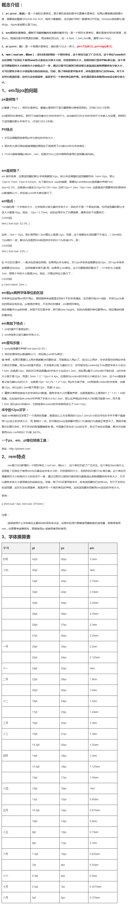

CSS单位 px em rem讲解

CSS3单位 rem
rem是css3中新增加的一个相对长度单位，相对于根元素html元素字体大小的单位。
IE9-IE10部分支持; IE11+; Edge 12+; FF 3.6+; chrome 4+; safari 5+; Opera 12.1+; IOS Safari 2.1+; android 2.1+
CSS3单位 vw vh
-
vw：
viewpoint width，视窗宽度，1vw等于视窗宽度的1%。
-
vh：
viewpoint height，视窗高度，1vh等于视窗高度的1%。
- vmin：vw和vh中较小的那个。
- vmax：vw和vh中较大的那个。
IE9+局部支持; chrome/firefox/safari/opera支持; ios safari 8+; android browser 4.4+; chrome for android 39
注意点
需注意chrome强制最小字体为12号，即使设置成 10px 最终都会显示成 12px，当把html的font-size设置成10px,子节点rem的计算还是以12px为基准，所以网上很多文章提到的将html的font-size设为10方便计算不是那么可取，解决方法：